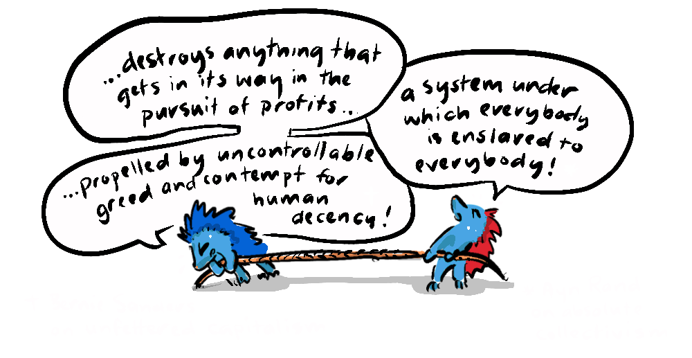
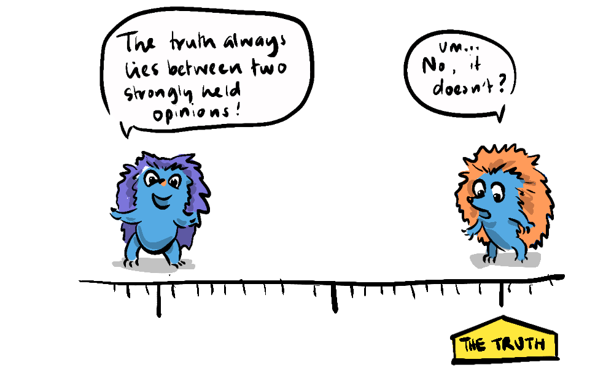

~ the alignment problem no one is talking about: part II ~

In part 1 we explored the AI alignment problem and pointed towards a deeper misalignment in humanity between the individual and the collective. The statements (above) of Rand, in the 1950s, and Sanders today, epitomise this particular alignment problem - with both sides seeing the other as irredeemable and doomed. Over the past seven decades, this ideological gulf has only widened, eroding cross-party collaboration in the US.
Both sides ostensibly want a thriving society, but have very different ideas of what that looks like, and how it should be achieved. Collectivists (or "left-wing" socialists) like Sanders generally look to system-wide changes to create a secure foundation of economic welfare, education and healthcare for everyone to then build upon. And in very general terms, Individualists (or "right-wing" capitalists) like Rand claim that low taxes and greater individual freedoms are most important for driving society forward.
This is a conflict of values, values that everyone shares to differing degrees. People who prioritise social issues also care about freedom and people who prioritise personal freedom also want a healthy, educated society. So, why can't we get aligned to find optimal solutions for everyone?

The rhetoric of Rand and Sanders is a product of the adversarial political system, particularly in the US, a system that hopes the oscillation between two narrow poles will land somewhere in the middle.
While voters have numerous reasons for casting their vote, a key virtue of democracy is that it works pretty well even if everyone is voting in their own interests, making it a very robust system against abuse. However, while political compromise means that policy can end up somewhere in the middle, this doesn't guarantee success, because the truth doesn't necessarily lie squarely between two opposing views. The fact that no one needs to consider the "other side" can retard our ability to design truly optimal solutions that serve all interests - solutions that do actually exist, after all, the collective is comprised of individuals.
The division between individual and collective interests often stems from the uncertainty surrounding collective goals. While individual goals like financial stability or personal freedom are immediate and quantifiable, collective goals such as environmental sustainability or social equality are nebulous, long-term, and fraught with uncertainty. This makes it difficult to create "a plan" for humanity.

In our series on Moloch we explored situations where individuals make rational self-interested decisions that have negative long-term collective outcomes, which serves as an ideal illustration for our misaligned politics (1) and manifests on either side of it; the individual (2) and the collective (3).
- Moloch appears in our misaligned politics when voters refuse to acknowledge the concerns of the other side because doing so risks losing an election, precluding constructive conversation. For example; if one side is pro-business and the other is pro-environment, conversations about solutions that are good for both business and the environment might be overlooked.
- Individualists might make rationally self-interested decisions in the short term (like tax cuts or deregulation), which in the long term turn out poorly for the collective (with reduced services and environmental impacts).
- Moloch isn't exclusive to individualism though. The 20th-century collectivist experiments in Communism offer a cautionary tale of how subjugation to the state, in the name of collective good, can also manifest as Moloch. Here, the phrase "to make an omelette, you need to break a few eggs" was tragically literal, as human lives were treated as expendable in the pursuit of ideological goals.
All of these facets of the political system can serve as conduits for Moloch, leading to outcomes that are detrimental to both the individual and the collective. However, it's important not to equivocate here. The Cold War was, for lack of a better word, "won" by democratic capitalism, and so individualism plays a strong role in politics today (particularly in the US) which means we must look at it more critically.

Social Philosopher Daniel Schmachtenberger includes the Molochian problems we've considered in his concept of the meta-crisis which holds that climate change, economic inequality, and political instability are not isolated crises but are outgrowths of deep and unsustainable systemic issues. He is careful not to claim that this is solely the result of capitalism, but that individualistic short-term thinking is an important factor.
In his conversation with Game Theorist Liv Boeree, Schmachtenberger entertains the idea that if we are creating AI that is modelled on human data, it will reflect our systemic issues, meaning that we will be creating an intelligent agent that mirrors the meta-crisis, or put another way - we are giving birth to a very real Moloch - The worst fears of Bernie and Ayn.

But let's step back from the brink. We know that solutions that enslave individuals to a state are not desirable and we know that unfettered capitalism doesn't naturally accommodate important long-term collective well-being. We can also speculate, as Schmachtenberger and Boeree have, that if we cannot find agreement across the two poles of individualism and collectivism, we'll lose the opportunity to build an AI that is aligned with our interests.
Knowing these issues drives us to look for other answers, and indeed there has been a reaction to polarisation by centrists such as Andrew Sullivan, Sam Harris, Steven Pinker, and Andrew Yang. This is a hopeful indication that there are people looking to find non-zero-sum solutions, people who believe it is possible to align humanity's interests.
In the next post we will look to great thinkers in history who found ways to align the interests of the individual and the collective.